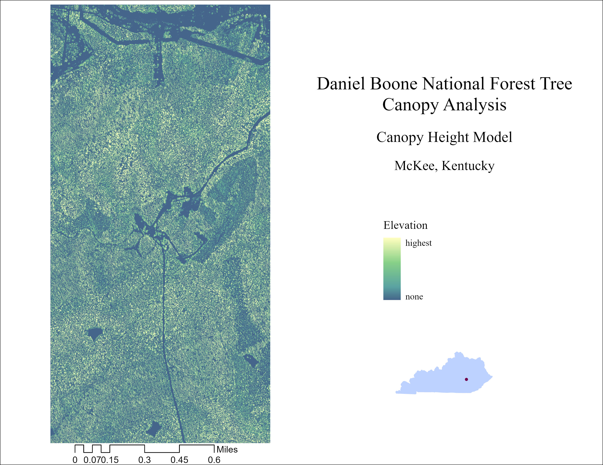

Hello!
Take a tour of the Daniel Boone National Forest!
DBNF 3-D visulization and canopy classification visulization Enlarge map
Daniel Boone National Forest Canopy Analysis: CHM & Classification
Daniel Boone National Forest was established in 1937, originally Cumberland National Forest, located in McKee, KY, close to London. The forest's name was changed as nod to frontiersman Daniel Boone (attributed to settling Kentucky) in 1966. The forest itself is biodiverse with a canyon-type landscape home to many endagered plant and animal species. There are about 40 species of endemic trees in the canopy, i classified 5 of the communties they belong to.
The goal of this project which I originally had done for my GEO 419 (remote sensing) final was to see if using high resolution color near infrared imagery alogside lidar point cloud data, would allow me to estimate and classify prominent tree communties in the Daniel Boone National Forest. This took a lot of trial and error with modeling in Erdas, but eventualy I was able to create a 5 band image (RGB, near infrared, and elevation) to classify and did so with success. It's important to note that without field data to confirm, these classes are just experimental and not meant for operational use. I plan to visit DBNF this summer and test the accuarcy!
DBNF Canopy Height Model

DBNF Canopy Classification by Estimated Community